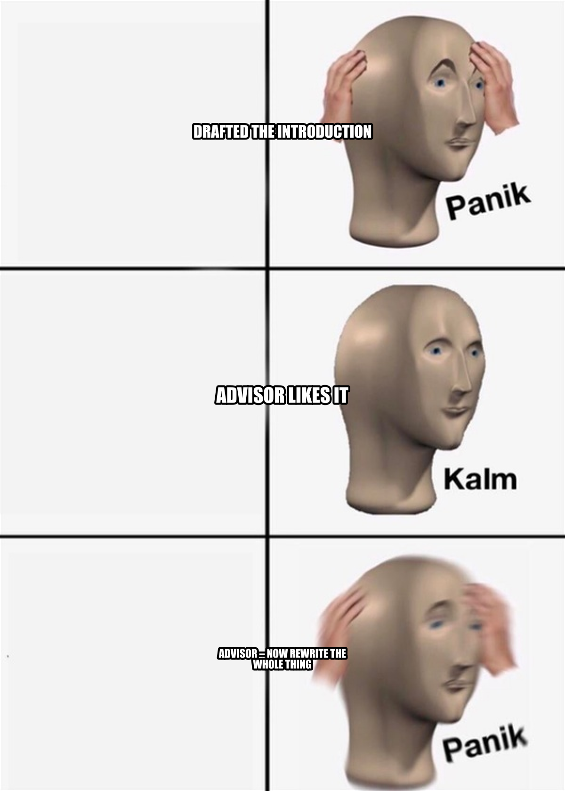

26 How to Write Scholarly Manuscripts
Prerequisites (read first if unfamiliar): Chapter 25, Chapter 2.
See also: Chapter 27, Chapter 29, Chapter 31, Chapter 30, Chapter 35.
Purpose

A scholarly manuscript is a contract with a reader. You promise novelty, evidence, and clarity. They promise attention. The contract is small — five thousand words, give or take — and the reader is busy. They have thirty other papers in the stack. If your paper is two pages of throat-clearing before the contribution, they will move on. If your figures are unreadable, they will move on. If your contribution is buried in the discussion, they will move on. The reviewer is a model of a reader who has already moved on, and your job is to win them back.
This chapter teaches how to write so that doesn’t happen. It covers the rhetorical conventions of academic prose, the structural conventions of empirical papers, the practical decision of where to send a paper, the specific work of preparing for double-blind review, and the harder skill of reading reviews and responding without losing your nerve. It is written for someone whose first manuscript is a class paper or honors thesis chapter — but the conventions scale to a CHI paper, a journal article, or a thesis chapter recast as a paper. None of this is mysterious; it is craft.
Read this after Chapter 25. The two chapters reinforce each other: writing well is partly the inverse of reading well. Once you have read fifty papers with a triage protocol, you know what makes the next reader keep reading.
Learning objectives
By the end of this chapter, you should be able to:
Identify the structure of a scholarly manuscript (IMRaD or its variants) and explain what each section is for.
Write in the hedged, signposted prose style that academic readers expect, while avoiding common stylistic traps.
Choose between a conference paper and a journal article for a given project, given target-venue norms in HCI, data science, computational social science, and information science.
Prepare a manuscript for double-blind review — anonymization, self-citation, supplementary materials.
Read peer reviews productively, draft a response letter, and execute a revise-and-resubmit cycle without losing your mind.
Recover from rejection: triage reviews, decide whether to revise-and-resubmit elsewhere, and avoid common post-rejection mistakes.
Running theme: write for a tired, smart, skeptical reader who has thirty other papers in their stack
The reader you are writing for is competent but exhausted. They want to know your contribution in the first page; they want to be persuaded the contribution is real by the third; they want to put the paper down by the fifth knowing whether to cite it. Make their job easy.
26.1 What scholarly writing is for
There is a distinction worth holding onto: the paper as a record of what you did, and the paper as an argument. A diary is the first. A manuscript is the second. The diary version of a paper is “here are all the things we tried, in the order we tried them, with the false starts and the dead ends.” The argument version is “here is the contribution, here is the evidence, here is what it implies.” The reader does not want the diary. They want the argument, told as cleanly as if you had known it from the beginning, even though you didn’t.
Two excellent companions to this chapter: Wendy Belcher’s Writing Your Journal Article in Twelve Weeks (1) is the practical workbook every information-science PhD student should own. Pat Thomson’s blog patter (2) is a long-running and warm voice on the actual experience of academic writing. Read both as you draft, not after.
26.2 Style: the conventions of academic prose
Academic writing has a recognizable style. It is not the same as good general writing. The rules that make a New Yorker piece sing — vivid metaphor, unmarked transitions, restrained signposting — will get you in trouble in a CHI paper. Academic readers expect signposting, hedging, and a particular kind of sentence-level clarity. Once you learn the conventions, they stop feeling like a cage.
IMRaD and its variants. Most empirical papers follow some version of Introduction → Methods → Results → Discussion. HCI papers often substitute “Related Work / Method / Findings / Discussion / Implications.” Theory papers and humanities pieces don’t follow IMRaD at all — they are rhetorical, organized by argument rather than by formula. When you read a paper, identify its structure on the first pass; when you write, mirror the structure of the venue you are targeting.
Signposting. Every section earns its keep by stating, in its first sentence or two, what it is doing. “In this section we describe the corpus and the cleaning pipeline.” Topic sentences carry the argument. Transitions are explicit: “Having established X, we now turn to Y.” Readers should never wonder where they are.
Hedging. Academic prose hedges. “Our results suggest” instead of “our results prove.” “These findings are consistent with” instead of “these findings show.” Hedging is not weakness; it is honesty. Hedge claims that are inferential and assert claims that are direct observations. The reviewer who flags “you said suggest — make it stronger” is rare; the reviewer who flags “you said prove — soften it” is on every panel.
Sentence-level moves. Prefer concrete subjects to abstract ones. “We collected 4,200 posts” beats “data collection yielded 4,200 posts.” Cut nominalizations — turn nouns back into verbs (“we measured” beats “we performed measurements of”). Vary sentence length. A single short sentence after three long ones reads as emphasis. Helen Sword’s Stylish Academic Writing and her free Writer’s Diet tool (3) are the most useful self-diagnostic; paste a paragraph in and see whether it reads as flabby or fit.
26.3 Audience awareness
The same finding can be a CHI paper, a JASIST paper, or a Big Data & Society paper depending on framing. A CHI paper sells the design implications. A JASIST paper sells the contribution to information behavior theory. A Big Data & Society paper sells the critical-theoretical stakes. Same data, three audiences, three abstracts. Before you draft, ask: who is the reader, what do they care about, and what is the contribution as they would describe it?
This is also the question that should drive your introduction. The introduction is not “background”; it is the contract. The reader needs to know, by the end of the second page, what problem you are solving, why it is hard, what your approach is, and what the contributions are. CHI introductions often do this in four paragraphs: problem, why hard, our approach, contributions. Use that template until you can deviate from it intentionally.
26.4 Conferences vs. journals (in IS-adjacent fields)
Information-science students publish in a heterogeneous set of venues, and the conference-vs-journal distinction matters because the cycles, length conventions, and review norms differ.
Conference papers in HCI and information science — CHI, CSCW, ICWSM, FAccT, ASIS&T, JCDL, iConference — are archival, peer-reviewed, and treated as primary research outputs. CHI is now single-column, with no fixed page limit but a working norm of around twelve thousand words. CSCW publishes in the Proceedings of the ACM on Human-Computer Interaction (PACM HCI) and runs a journal-style revise-and-resubmit cycle. Conference review cycles run four to eight months from submission to decision.
Journal articles — TOCHI, JASIST, Information, Communication & Society, New Media & Society, Big Data & Society, PNAS Nexus for computational social science, and the disciplinary journals in your topic area — run longer (often eight to twelve thousand words, sometimes more) and slower (one to three years from submission to publication, with multiple revision rounds typical). Scope and theory expectations are usually higher.
A practical comparison appears as a Quick reference table at the end of this chapter.
26.5 Picking a venue
Three heuristics. Where do the papers you cite most often appear? If your bibliography is half CHI papers, your paper probably wants to be a CHI paper. Where does your advisor publish? They know the editors, the AC pool, and the review norms. What are you optimizing for? Speed favors a conference; depth and theoretical scope favor a journal; reach to a non-CS audience favors an open-access journal in a related field.
A few practical notes. Preprints are increasingly normal. arXiv (4) and SocArXiv (5) host preprints; check your venue’s preprint policy before you post. Most major venues now permit preprints; some require that you not advertise the preprint until acceptance. Read the policy at the time of submission — these change.
A common failure mode for students is to draft a paper and then pick a venue. Do it the other way around: pick the venue, read three recent accepted papers from it, and write the paper with their conventions in mind. The introduction, length, citation density, and rhetorical posture are venue-specific.
26.6 Drafting and revising
A first draft should be ugly. Anne Lamott’s “shitty first drafts” applies to scholarly writing; Belcher’s twelve-week schedule scales it to a coherent project. The actual workflow most working researchers use:
- Outline first. A two-page outline at section-and-paragraph granularity. Each paragraph gets a topic-sentence stub. This is the moment to decide what the paper is about; it is much easier to delete a paragraph stub than two pages of polished prose.
- Methods first. Write the methods section before the introduction. You know what you did; that is the easiest section to draft. The introduction requires you to know what the contribution is, which is sometimes only clear after you’ve written the results.
- Fat draft, then cut. Get the whole arc onto the page before you polish any of it. Most students reverse this — they polish the introduction for two weeks and never finish the discussion. Polishing is fast at the end and slow at the beginning.
- Show drafts. Belcher’s framing — “writing partners” — is sound. A weekly half-hour swap of pages with one collaborator does more for your writing than ten hours alone. See Chapter 32 for review etiquette.
- Track manuscripts in git. A
manuscript/folder withmain.tex,references.bib, and the figures, all under version control. See Chapter 31 for the workflow; see Chapter 29 for what to put in.gitignore.
26.7 Preparing for double-blind review
Most HCI venues — CHI, CSCW, FAccT — review double-blind. The norms have shifted in the last decade and continue to shift; the specifics in your venue’s current Call for Papers are what bind you, not the norms from three years ago.
The mechanics: remove author names and affiliations from the title page. Remove acknowledgments. Cite your own prior work in the third person (“Prior work by [authors] showed…”) or with anonymized references — most venues accept either, but check. Be careful about identifying details: a system you have promoted on Twitter is identifying; a public GitHub repo is identifying; a uniquely named field site is identifying. Some venues let you cite a public repo with the URL anonymized; others ask you to omit it and provide it in a supplementary materials submission that the reviewers can access without learning your identity.
LLM-disclosure policies have become a moving target. Most major venues now require some form of disclosure of LLM use beyond minor editing; some forbid pasting reviewer text into LLMs. Read the current Call for Papers — not a blog post from last year — at the time you submit. See Chapter 35 for the principled discussion; the venue policy is the binding constraint.
26.8 Reading reviews and responding
You will get reviews. Some will be helpful. Some will misread the paper. One will probably tell you to do an experiment that would be a separate paper. The first read of reviews is emotional; do not respond from that read. Wait twenty-four hours. Then do a working second read.
In the second read, categorize each comment. Substantive comments require new analysis or new writing. Clarification comments mean the reader misunderstood — that’s a writing problem, not a research problem; the fix is to make the paper clearer, not to argue. Stylistic comments are usually small and worth doing. Mistaken comments — where the reviewer is factually wrong — are rare and require care; you address them respectfully in the response letter, not in a snarky footnote.
Then draft a response letter. The standard format: for each reviewer, quote their comment verbatim (in bold or block-quoted), then write your response (often italicized or indented), then point to the specific section and line numbers where the change appears in the revised manuscript. The response letter is read by the editors and the reviewers; it is the artifact that decides whether the revision is accepted. A clean, point-by-point response with explicit pointers — “see §3.2, lines 145–158” — is what makes a positive decision easy.
The hardest reviewer comments are not the harsh ones. The hardest are the ones where the reviewer is half-right. They are flagging a real problem but proposing a fix that doesn’t work. Your job is to acknowledge the underlying problem in the response letter, propose a different fix that does work, and explain why. This is a standard rhetorical move and reviewers appreciate it when done well.
26.9 R&R, accept, reject: what to do next
Major revision. Treat the resubmission as a new paper. Budget at least four weeks. Don’t add new authors mid-cycle (most venues forbid it; check the policy). Read the original reviews against your revised manuscript before submitting and check that every comment is addressed in the response letter.
Minor revision. Faster — usually one to two weeks. Same response-letter format, less new analysis.
Accept. Celebrate. Then read the camera-ready instructions twice. Most acceptances come with template requirements (the venue’s \documentclass), copyright forms, ORCID requirements, and supplementary materials deadlines. Miss none of them. See Chapter 29 for the template mechanics.
Reject. Don’t resubmit the same draft to a different venue. Triage the reviews: which comments are about the paper, and which are about the venue fit? Address the paper-level comments. Re-target the framing for the new venue. A reject from CHI does not mean reject from JASIST; the audiences are different, and the framing should be too.
26.10 Writing with AI
See Chapter 35 for the principled discussion of LLM use. For manuscript writing specifically, the rules are: disclose what your venue requires you to disclose, and don’t paste reviewer text into a public LLM (some venues now explicitly forbid this, and it is bad practice in any case — reviews are confidential).
Useful uses: LLMs are good at catching nominalizations, reducing wordiness in a paragraph you’ve already drafted, generating alternative phrasings of an awkward sentence, and turning a Markdown table into LaTeX. They are bad at the actual contribution — the argument is yours.
26.11 Stakes and politics
Scholarly publishing is one of the most overtly political artifacts in academic work, and the conventions taught in this chapter ride on top of it. Three things to notice. First, the genre itself is gatekeeping. IMRaD, the literature-review-as-funnel, the move to position your contribution against three or four “lines of work” — these are conventions of a specific community at a specific moment, and fluency in them is unevenly distributed. Scholars from non-Anglophone backgrounds, from disciplines that prize different rhetorical structures, and from communities whose knowledge does not fit easily into “novel finding plus quantitative evidence” have to translate before they can even start writing. The translation cost is real and falls unequally.
Second, authorship and credit. Author order, corresponding authorship, and how contributions get described in acknowledgements are not just etiquette — they are how labor gets attributed and how careers compound. The conventions vary by field (alphabetical in some economics traditions, contribution-ordered in HCI, last-author-is-PI in lab sciences) and by power (the senior author’s name on a paper drafted entirely by a graduate student is a recurring source of disputes). Citation practices add another layer: “Matilda effects” — under-citation of women, scholars of color, and scholars from outside dominant networks — are well documented and persistent. Third, what gets published at all. Reviewers and editors gatekeep through their own training, their own networks, and the venue’s institutional incentives; null results, replications, and work that contradicts a high-status finding face systematically tougher review. None of this means you should not write papers. It means knowing what kind of social system you are submitting to.
See Chapter 8 for the broader framework. The concrete prompt to carry forward: when you choose what to cite, who to credit, and what to call a “contribution,” you are participating in a status system. Be deliberate about how.
26.12 Worked examples
From outline to introduction
You are drafting a class paper that will become a CHI submission. Topic: the effects of a moderation policy change on civility on a subreddit. Here is the four-paragraph CHI introduction template, and a 400-word draft applying it.
Paragraph 1: the problem. “Online platforms increasingly use moderation interventions to shape user behavior. The relationship between policy changes and user-level outcomes — civility, retention, polarization — is not well understood, especially on platforms run by volunteer moderators rather than centralized teams.”
Paragraph 2: why it’s hard. “Measuring civility at scale is difficult. Existing toxicity classifiers vary widely in how they handle community-specific norms, and naturalistic studies of moderation are confounded by selection: communities that change moderation policy differ from those that don’t.”
Paragraph 3: our approach. “In this paper, we study a single subreddit before and after a publicly announced policy change, using a difference-in-differences design with a matched comparison community. We measure civility using both an off-the-shelf classifier and a community-grounded annotation set.”
Paragraph 4: contributions. “We make three contributions. First, we show that moderator-led policy changes have measurable effects on civility within the first month. Second, we demonstrate that off-the-shelf classifiers underestimate change because they miss community-specific norms. Third, we provide a replication-ready code and data release that enables follow-on work on volunteer-run platforms.”
That is roughly the shape. The introduction does not require a literature review; that is the next section. It states the problem, the difficulty, the approach, and the contributions, in that order.
Anonymizing a paper for CHI
You are submitting to CHI. Below is a side-by-side of a paragraph before and after anonymization.
Before: “We deployed Civilify, a Reddit moderation assistant developed at the University of Colorado Boulder. As described in our prior work (Keegan, 2023), Civilify uses a transformer-based classifier to flag rule-breaking comments before they are posted. The system is open-source and available at https://github.com/brianckeegan/civilify.”
After: “We deployed [Anon-System], a Reddit moderation assistant. As described in prior work by the authors [Anonymized Citation 1], [Anon-System] uses a transformer-based classifier to flag rule-breaking comments before they are posted. The system is open-source; the URL is provided in supplementary materials submitted to the program committee.”
Three things changed. The system name was anonymized. The self-citation became third-person and stripped to a placeholder. The public GitHub URL — which would identify the authors via commit history — was moved to supplementary materials, which the program committee can access without learning the authors’ identities.
You also need to remove your name from the author block (most venues handle this with a \anonymize flag in the acmart template), strip your affiliation, and remove the acknowledgments section for review. Restore everything for the camera-ready.
Drafting a response letter to a Major Revision
A snippet from a real-format response letter. Three reviewer comments and the responses that won the round.
R2.1: “The classifier validation in §3.2 is undersold. The agreement statistics with the human coders are reported but no confusion matrix is provided, which makes it hard to evaluate the classifier’s behavior on the minority class.”
We thank R2 for this comment. We agree that the original §3.2 underspecified the classifier’s behavior on the minority “uncivil” class. In the revised manuscript, we have added Table 2 (a full confusion matrix) and revised §3.2 to discuss precision and recall on the minority class explicitly. See §3.2, lines 287–312, and Table 2.
R2.2: “The DiD identification assumption is not adequately defended. What is the parallel-trends evidence?”
We agree this needs strengthening. We have added a new Figure 4 showing pre-treatment trends in the outcome for the treated and matched-comparison communities, with formal placebo tests in the new Appendix B. The discussion in §4.1 (lines 410–438) now references this evidence directly.
R3.4: “The authors should run the same analysis on a second subreddit to demonstrate generalizability.”
We appreciate the suggestion. A second-site replication is beyond the scope of this paper — selecting a comparable second site involves substantive curatorial work that would itself constitute a separate study. We have, however, expanded the limitations section (§6, lines 612–630) to discuss the single-site nature of the study explicitly and to flag a multi-site replication as the natural next step.
The third response is the half-right comment handled well. The reviewer is correct that single-site studies have generalizability limits; they are wrong that running a second site is a quick fix. The response acknowledges the underlying concern, offers a different fix (an explicit limitations discussion), and points to a future paper. Editors read responses like this as professional and complete.
26.13 Templates
A manuscript outline (paste into outline.md at the top of every new paper):
# {Working title}
**Target venue:** {CHI 2027 / TOCHI / etc.}
**Target word count:** ~{12000}
**Target submission:** {YYYY-MM-DD}
**Co-authors:** {names}
## Contribution (one paragraph, written before any prose)
...
## Outline
### 1. Introduction (~1200 words)
- Para 1: problem
- Para 2: why hard
- Para 3: our approach
- Para 4: contributions
### 2. Related work (~1500 words)
- Theme A
- Theme B
- Gap
### 3. Method (~1800 words)
...
### 4. Findings/Results (~3500 words)
...
### 5. Discussion (~1500 words)
...
### 6. Limitations and future work (~600 words)
...A reviewer-response-letter skeleton:
# Response to reviewers — {Paper title} ({Venue} submission ID #####)
## Summary of revisions
- {Bullet list of the major changes, with section pointers.}
## Reviewer 1
### R1.1
> {Verbatim reviewer comment in block quote.}
We thank the reviewer for...
We have addressed this in §X, lines NNN–NNN.
### R1.2
...
## Reviewer 2
...A submission-day checklist:
26.14 Exercises
- Take a 200-word paragraph from one of your own past assignments. Rewrite it in academic prose: concrete subjects, hedging where appropriate, signposting at the start, no nominalizations. Submit before/after.
- Pick a published CHI paper. Write a 100-word “contribution paragraph” using only the abstract — no peeking at the rest of the paper.
- Compare the Calls for Papers of CHI and a journal in your area. Produce a one-page comparison table covering scope, length, review style, anonymization, and timeline.
- Take one of your own writing samples (a class paper, a thesis chapter) and anonymize it for double-blind review. Have a classmate try to identify you.
- Take a real or instructor-provided reviewer comment and draft a 150-word response that quotes the comment, addresses it, and points to a specific section of a hypothetical revision.
26.15 One-page checklist
- Did you pick the venue before you started drafting?
- Does the introduction state the problem, the difficulty, the approach, and the contributions, in that order?
- Does every section start with a sentence that says what the section is doing?
- Are claims hedged where they are inferential and direct where they are observational?
- Did you write methods before introduction?
- Are figures and tables readable at print size?
- Did you anonymize per your venue’s current policy?
- Does the bibliography compile cleanly with stable citation keys (see Chapter 25)?
- Is the manuscript under version control with the
.bibfile (see Chapter 31)? - Did you check the LLM-disclosure policy in the current CFP?
26.16 Quick reference: conference vs. journal in HCI/IS
| Dimension | HCI/IS conference (CHI, CSCW, FAccT) | Journal (TOCHI, JASIST, NM&S) |
|---|---|---|
| Length | ~8–12k words, single column | ~8–12k words, sometimes longer |
| Cycle | 4–8 months, often 1–2 R&R rounds | 1–3 years, often 2–4 rounds |
| Review | Double-blind; AC + 3 reviewers | Often double-blind; AE + 2–3 reviewers |
| Output | Archival proceedings (PACM HCI for CSCW) | Issue, often online-first |
| Typical revisions | Minor or major | Major, often multiple |
| Anonymization | Strict, current CFP binds | Variable; check the journal |
| Preprints | Generally permitted; check CFP | Generally permitted; check |
- Wendy Laura Belcher, Writing Your Journal Article in Twelve Weeks (University of Chicago Press, 2019, 2nd ed.) — the standard structured workbook for taking a draft from idea to submission; especially good for graduate students.
- William Strunk and E. B. White, The Elements of Style — the classic American style guide; brief, opinionated, and worth re-reading every year.
- Helen Sword, Stylish Academic Writing and the Writer’s Diet test — research-grounded advice on cutting bloat from academic prose; the diet test is a quick automated check you can paste any draft into.
- Pat Thomson, patter — long-running blog of practical writing advice for academics; especially good on revision and reviewer responses.
- ACM, Master Article Template — the canonical LaTeX/Word templates for ACM venues; pairs with Chapter 29.
- Committee on Publication Ethics, Authorship and contributorship — the standard guidance on who should be named as an author and how contributions should be reported; useful when navigating co-authorship disputes.
- Mariana Cancian-Sotelo and Cassidy Sugimoto, The Matilda Effect in science communication and follow-on work — empirical studies of citation and attribution gaps that the “Stakes and politics” framing above gestures at.
- The current Call for Papers for your target venue (read it the week you submit; the genre conventions live there).